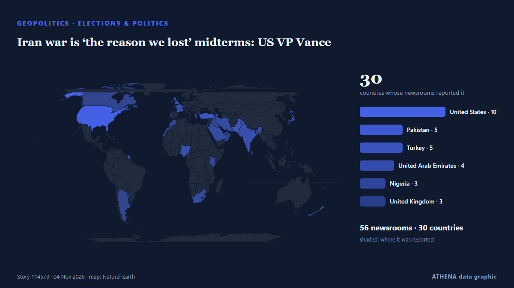

Βόρεια Αμερική
Βόρεια Αμερική: τα πιο πρόσφατα γεγονότα ανά χώρα, με κίνδυνο, πηγές και χώρες από το ATHENA.

ΓεωπολιτικήIran war is ‘the reason we lost’ midterms: US VP Vance
Trump acknowledges Iran war played role in US midterms defeat. από Gulf News
Russia hails Trump waiving sanctions as 'historic'
Trump’s executive order comes as he has been warming towards Russia. από The Straits Times
Trump loses control of Congress
If Republicans lose control of Congress, the rest of his time in office is likely to be consumed by Democratic-led investigations into his administration and his business dealings, and possibly even… από PBS NewsHour
A night of historic firsts: 2026 midterm election winners set new milestones for diversity and generational change
Trump Fires White House Press Secretary Katie Zacharia After Just 5 Days
Donald Trump dismissed new White House Press Secretary Katie Zacharia on Friday, Oct. από Kyiv Post
US strikes Iran’s Qeshm island – Report
The US has not publicly announced the attacks, so as not to signal any intention of resuming major combat operations, the Wall Street Journal reported. από CNA (Channel NewsAsia)
First Russian Diesel From Putin-Trump Deal Heading for US
The first Russian diesel bound for the US following a surprise agreement reached between Moscow and US President Donald Trump is aboard a tanker heading for New York, ship-tracking data showed on… από gCaptain